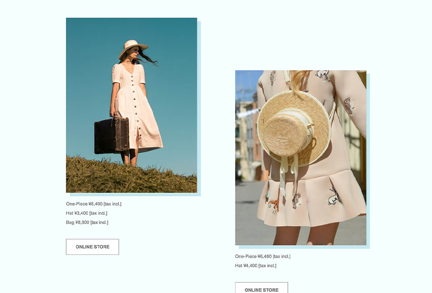

Webデザイン・コーディング
【概要】
ナチュラル志向の女性向けアパレルブランドのLP。
新しいシーズンコレクションの紹介ページ。
※架空の企業を想定したWebサイト。
【想定ユーザー】
20代~30代の女性。ナチュラルで落ち着いた雰囲気のファンションが好きでよく着用している。
【想定される利用シーン】
・ブランドのファッションが好きで、新シーズンのラインナップをチェックしたい。
・これから迎えるシーズンに合ったコーディネート例を見てみたい。
・なんらかのきっかけで新しくブランドを知った顧客が、どんな商品があるのか、最新の内容をチェックしたい。
【デザイン方針】
ブランドのナチュラルなイメージを伝える。
【デザインでの工夫】
・大きめの写真と、スナップ写真やカードのようなデザインで、商品のイメージがつきやすく、遊び心も感じるようにした。
・余白を多めに取ることで、複数商品があっても見やすく、コーディネートのイメージがしやすいように。
(近くの商品同士が敷き詰められていてイメージしにくいといった事態を避ける。)
・ファーストビューや、途中の画面横幅を全て使った写真などで、ファッションを着用した際のイメージがしやすいようにした。
担当領域：設計、デザイン、コーディング
制作ツール：XD, VSCode
制作時間：8時間30分